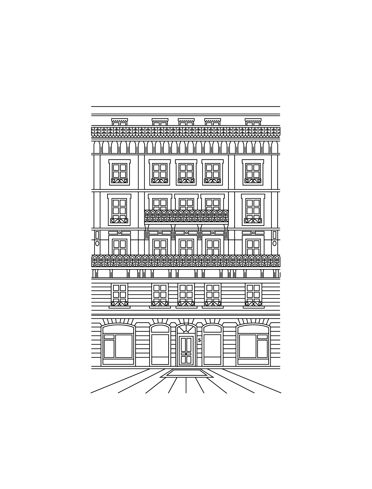

Aria
Aria Lemaître (b. 1986, Lyon) lives and paints in Marseille, where her studio occupies a former tailor's workshop on the rue Saint-Ferréol. Trained at the École nationale supérieure des beaux-arts de Lyon and, briefly, at the Royal Drawing School in London, Lemaître has worked exclusively in oil since 2011.
Her practice circles a single, narrow subject: rooms that someone has just left. Coats on chairs, half-drawn curtains, a folded newspaper, the weight of light on a wall that has held it for a hundred years. The works are small in number — she completes between six and nine canvases a year — and dense in observation. Critics have likened her surfaces to Vilhelm Hammershøi and, latterly, to the slow domestic interiors of Lois Dodd.
INHABITED is the second chapter of a body of work begun in 2022. The first chapter — exhibited at Galerie Lelong & Co., Paris, in autumn 2024 — proposed the interior as a site of recent absence. The second chapter proposes the interior as a site of recent return: someone has come back into the room, even if we cannot see them. Each canvas in the exhibition is the same modestly-furnished apartment, observed at a different hour of the same day.
Lemaître's work is held in the collections of the Musée d'art moderne de la Ville de Paris, the Fondation Carmignac, and a number of private collections in Switzerland, Germany, and the United States. She is the recipient of the 2023 Prix Marcel Duchamp shortlist and the 2024 Villa Médicis residency.
A room is never empty. It is only between two people. The painting is the half-second after someone has left and the half-second before someone else walks in.
”Aria Lemaître
Threshold, 2025
Oil on linen 200 x 150 cm 78 3/4 x 59 in. (LAM-2025-01)Price (excl. VAT): 95'000USD
Aria Lemaître
Quiet Tenant, 2024
Oil on linen, artist's frame 30 x 40 cm 11 3/4 x 15 3/4 in. (LAM-2024-07)Sold
Provenance
Literature
Provenance

Our overarching ambition is to cultivate a dynamic community that engages both seasoned collectors and younger generations, while revitalising the Geneva art scene.
Founded by Thea Montauti d’Harcourt Lyginos, L’Appartement is a space dedicated to hosting focused exhibitions that highlight specific artists projects and dialogues.
Through diverse exhibitions, collaborations and off-site projects, L’Appartement Gallery, Geneva aims to create a dynamic podium for emerging and established artists worldwide and to create a dialogue between modern, contemporary art and design. At the core of the gallery’s vision is the nurturing of emerging talents alongside historically significant artists.
Embracing a modern, hybrid gallery model, L’Appartement seeks to build connections between the art industry and other sectors, thus expanding the influence of art on diverse audiences. Nestled on the second floor of a historic building in Geneva, the gallery offers an intimate setting for collaborative initiatives, involving artists, international galleries and independent curators. Complementing the gallery’s presence in Geneva, in July 2026, the gallery will host an off-site exhibition in the cycladic island of Antiparos, curated by Craig Burnett.